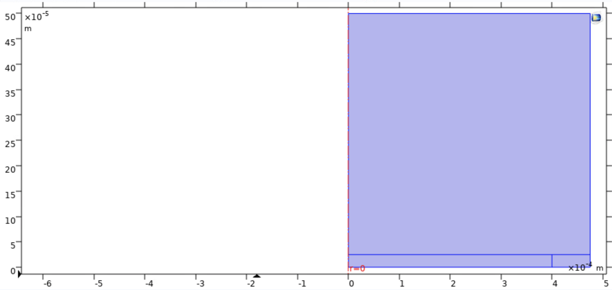
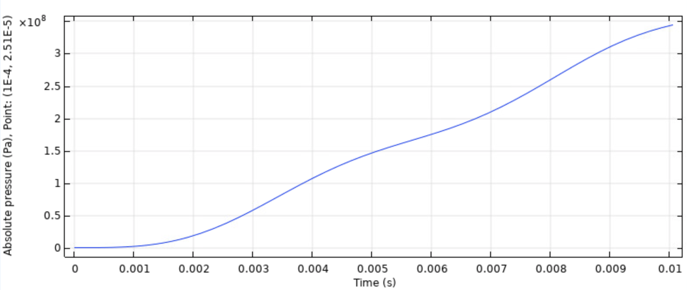
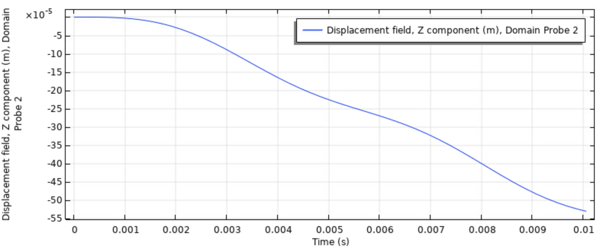

Waveform Synthesis with ModelSim Tutorial
This video shows how to read data from a wavetable and simulate a sine wave in ModelSim. The hex file containing the wavetable, the description of the project from WSU explaining waveform synthesis, and the verilog code I wrote to simulate the sine wave are attached below.
Huge shout out to my two undergraduate research assistants for their attention, intuitive questions, and valuable input! Thank you Sarthak and Yatian!
If you are interested in waveform synthesis check out my paper An Initial Implementation of a Direct Digital Synthesizer Module for Radar Applications.
Week 8 - Revisiting the Thermal Piston Model
This week, I revisited the thermal piston model and utilized Comsol modules such as laminar flow and fluid-structure interaction to model pressure changes in the air interacting with the membrane.
Thermal-Piston Model
Due to the rotational symmetry of the membrane, we can create the thermal-piston model using two dimensional geometry in Comsol and then project that model to three dimensions when analyzing properties such as temperature, displacement, etc.
The largest section of geometry represents a film of air, and at the bottom of the geometry, there is a membrane (larger rectangle) as well as a spring foundation (smaller rectangle). Inside the volume of air, we enable weakly compressible fluid flow- changes in density as pressure changes. After two laser pulses, the resulting pressure changes directly above the membrane, and displacement changes at the membrane are shown below:
 The ambient air pressure is approximately 100 kPa. When the model is run with no temperature change (static air), that air pressure holds consistent for the entire time period. Thus, the application of heat is the cause behind pressure changes.
The maximum displacement of the membrane approximately 1e-4. This is higher than what we saw with the generation of thermoelastic waves indicating that the thermal-piston effect is larger in magnitude.
One problem with this representation of the thermal-piston model is that we assume a closed cell when in reality, the cavity that the diaphragm is located in would allow air to escape and cool air to replace warm air. Another problem with this model is that the air is weakly compressible. If we model the air as incompressible, there are no pressure changes, and if we model the air as fully compressible, the pressure changes are much higher. The best representation for the MEMs microphone is unclear, so more investigation needs to be done on which
Article of the Week: Row Hammer[1] and Project Zero[2]
DRAM is organized into a two dimensional array of cells, and the close proximity of each cell makes memory susceptible to disturbance errors. One exploitation of disturbance errors is Row Hammer, where repeated toggling of the same row of cells in memory causes charge leaks in neighboring rows. This ultimately leads to cells losing data, so attacks that exploit Row Hammer can change memory they are not privileged to change. This paper presents one defense, PARA, which would rely on stateless, probability-based mechanisms to periodically refresh neighboring rows if a worline is toggled.
Google’s Project Zero has used the knowledge of the Row Hammer paper to show two major exploits: gaining kernel privileges when run as an unprivileged process, and escaping from the Native Client sandbox. For the first exploit, the authors of Project Zero found that it is possible to induce a bit flip on the page table using Row Hammer, and this bit flips allows attackers to gain read-write access to the page table and thus all of memory. In the second exploit, inducing a bit flip allows machine code running on Native Client to jump to unaligned addresses which may contain unsafe instructions.
The contents of both Row Hammer and Project Zero establish the need to resolve electromagnetic coupling issues between neighboring DRAM rows in order to guarantee the safety of computing technologies.
References
[1] Flipping Bits in Memory Without Accessing Them: An Experimental Study of DRAM Disturbance Errors https://users.ece.cmu.edu/~yoonguk/papers/kim-isca14.pdf
[2] Project Zero https://googleprojectzero.blogspot.com/2015/03/exploiting-dram-rowhammer-bug-to-gain.html

The Photovoltaic Effect
As I mentioned in my previous post, some of my recent research experience has been focused on light-based injection attacks. The causality of the laser injection attacks on LiDAR are fairly straightforward, as the LiDAR devices are designed to sense light. In the case of Light Commands4, the causality is not as clear. I will be investigating different physical phenomena to develop a model of what is going on. The next phenomenon that I want to look at is the photovoltaic effect.
Most of the information here was found in the literature for solar cell design, the most common use of photovoltaics. In particular, the website pveducation.org gave a wealth of information on the topic, so go there to learn even more.
The Photovoltaic Effect
Like the photoelectric electric effect, the photovoltaic effect occurs when light causes electrons within a material to change energy states. In the photoelectric effect, high energy photons cause the electrons to break free from the surface of the material altogether, but in the photovoltaic effect, the electrons only gain enough energy to jump from the valence bands to the conduction bands of a crystalline structure. This adds a negatively-charged electron carrier particle to the structure, and leaves behind a positively-charged carrier particle with the hole left behind. In most materials, the random thermal motions of the electrons means that the electron-hole pairs will recombine quickly, giving off light (as reflections) and generating no current. But there is a special case where it becomes more important: Doped Semiconductors.